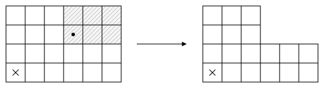

All work and no play makes Max a dull boy
The Big Match (Gillette, 1957; Blackwell and Ferguson, 1968)
Every day player two chooses heads or tails, and player one tries to predict his choice. If player one is correct, player two pays her one dollar; otherwise, she pays him one dollar. This continues as long as player one predicts tails. The first day she predicts heads is the big match. Whoever wins that day receives one dollar from the loser every day thereafter, ad infinitum. Player one maximizes the expected limsup of her average payoff; player two minimizes it.
Player two has a straightforward optimal strategy. Not so straightforward for player one.
Chomp (Gale, 1974)
There is an m × n chocolate bar whose bottom left square cell is poisoned. Two players take turns choosing a (still extant) square and eating all remaining chocolate in the rectangle extending from that square to the top right corner of the (original) chocolate bar. The player who eats the poisoned square loses.

The first player can guarantee a win, though it might take some time to figure out how.
Pick the largest number (Cover, 1987)
Player one writes two distinct positive integers on separate slips of paper and places them face down. One of the two slips is turned over uniformly at random, and player two has to guess whether its number is the larger of the two. Player two wins if the guess is correct; otherwise, player one wins.
Player two can guarantee herself a win with probability strictly greater than one half.
Kuhn poker (Kuhn, 1950)
Two players each put one dollar into the pot and receive one of three cards, J, Q or K. Each sees only their own card. Starting with player one, the players take turns betting one dollar or passing. Two consecutive bets or two consecutive passes end the game, and the player holding the higher card wins the pot. A player who passes after a bet loses the pot.
This game is quite rich for having just three cards.
Two-finger morra (Good, 1965)
There are two players. Each shows one or two fingers and, at the same time, announces a guess of the number shown by the opponent. If both players’ guesses are right or both are wrong, the game is drawn. Otherwise, the player who guessed correctly wins from the opponent an amount equal to the total number of fingers shown.
There are infinitely many equilibria.